A chi square quantile-quantile plots show the relationship between data-based values which should be distributed as \(\chi^2\) and corresponding quantiles from the \(\chi^2\) distribution. In multivariate analyses, this is often used both to assess multivariate normality and check for or identify outliers.
For a data frame of numeric variables or a matrix supplied as the argument x,
it uses the Mahalanobis squared distances (\(D^2\)) of
observations \(\mathbf{x}\) from the centroid \(\bar{\mathbf{x}}\)
taking the sample covariance matrix \(\mathbf{S}\) into account,
$$
D^2 = (\mathbf{x} - \bar{\mathbf{x}})^\prime \; \mathbf{S}^{-1} \; (\mathbf{x} - \bar{\mathbf{x}}) \; .
$$
The method for "mlm" objects fit using stats::lm() for a multivariate response
applies this to the residuals from the model.
The \(\chi^2_p\) reference distribution is an approximation. With dist = "beta",
the exact (scaled) beta distribution of \(D^2\) for a multivariate normal sample
is used instead, which matters when \(n\) is small relative to \(p\).
Usage
cqplot(x, ...)
# S3 method for class 'mlm'
cqplot(x, ...)
# Default S3 method
cqplot(
x,
method = c("classical", "mcd", "mve"),
dist = c("chisq", "beta"),
detrend = FALSE,
pch = 19,
col = palette()[1],
cex = par("cex"),
ref.col = "red",
ref.lwd = 2,
conf = 0.95,
env.col = "gray",
env.lwd = 2,
env.lty = 1,
env.fill = TRUE,
fill.alpha = 0.2,
fill.color = trans.colors(ref.col, fill.alpha),
labels = if (!is.null(rownames(x))) rownames(x) else 1:nrow(x),
id.n,
id.method = "r",
id.cex = 1,
id.col = palette()[1],
xlab,
ylab,
main,
what = deparse(substitute(x)),
ylim,
...
)Arguments
- x
either a numeric data frame or matrix for the default method, or an object of class
"mlm"representing a multivariate linear model. In the latter case, residuals from the model are plotted.- ...
Other arguments passed to methods
- method
estimation method used for center and covariance, one of:
"classical"(product-moment),"mcd"(minimum covariance determinant), or"mve"(minimum volume ellipsoid).- dist
reference distribution for the theoretical quantiles:
"chisq"(the default), the \(\chi^2_p\) approximation, or"beta", the exact scaled beta distribution of classical \(D^2\) for a multivariate normal sample. See the section Reference distribution in Details.- detrend
logical; if
FALSE, the plot shows values of \(D^2\) vs. the theoretical quantiles. ifTRUE, the ordinate shows values of \(D^2\) minus the theoretical quantiles- pch
plot symbol for points. Can be a vector of length equal to the number of rows in
x.- col
color for points. Can be a vector of length equal to the number of rows in
x. The default is the first entry in the current color palette (seegrDevices::palette()andgraphics::par()).- cex
character symbol size for points. Can be a vector of length equal to the number of rows in
x.- ref.col
Color for the reference line
- ref.lwd
Line width for the reference line
- conf
confidence coverage for the approximate confidence envelope
- env.col
line color for the boundary of the confidence envelope
- env.lwd
line width for the confidence envelope
- env.lty
line type for the confidence envelope
- env.fill
logical; should the confidence envelope be filled?
- fill.alpha
transparency value for
fill.color- fill.color
color used to fill the confidence envelope
- labels
vector of text strings to be used to identify points, defaults to
rownames(x)or observation numbers ifrownames(x)isNULL- id.n
number of points labeled. If
id.n=0, the default, no point identification occurs.- id.method
point identification method. The default
id.method="r"will identify theid.npoints with the largest value of abs(y), i.e., the largest Mahalanobis DSQ. Seecar::showLabels()for other options.- id.cex
size of text for point labels
- id.col
color for point labels
- xlab
label for horizontal (theoretical quantiles) axis
- ylab
label for vertical (empirical quantiles) axis
- main
plot title
- what
the name of the object plotted; used in the construction of
mainwhen that is not specified.- ylim
limits for vertical axis. If not specified, the range of the confidence envelope is used.
Value
Returns invisibly a data.frame containing squared Mahalanobis distances (DSQ),
their theoretical quantiles and p-values, for the identified
points among the rows of x or the residuals of the model, else NULL
if no points are identified. p is the upper-tail probability of DSQ
under the reference distribution, dist. It is not adjusted for
multiplicity.
Details
cqplot is a more general version of similar functions in other
packages that produce chi square QQ plots. It allows for classical
Mahalanobis squared distances as well as robust estimates based on the MVE
and MCD; it provides an approximate confidence (concentration) envelope
around the line of unit slope, a detrended version, where the reference line
is horizontal, the ability to identify or label unusual points, and other
graphical features.
Cases with any missing values are excluded from the calculation and graph with a warning.
Reference distribution
The \(\chi^2_p\) distribution of \(D^2\) is only an approximation, which holds as \(n \rightarrow \infty\). It is poor when \(n\) is small relative to \(p\), and its long upper tail makes the largest distances, exactly where outliers are judged, look less extreme than they are.
For a sample of \(n\) observations from a multivariate normal distribution, with
the classical estimates \(\bar{\mathbf{x}}\) and \(\mathbf{S}\) (divisor
\(n-1\)), the exact distribution of \(D^2\) is a scaled beta
(Gnanadesikan & Kettenring, 1972):
$$
\frac{n \, D^2}{(n-1)^2} \sim \text{Beta} \left( \frac{p}{2}, \frac{n-p-1}{2} \right) \; .
$$
So \(D^2\) is bounded above by \((n-1)^2 / n\), unlike \(\chi^2_p\).
With dist = "beta", the sorted \(D^2\) values are plotted against
\((n-1)^2 / n\) times the quantiles of this beta distribution at ppoints(n),
which keeps the plot on the scale of \(D^2\), with the same reference line
of unit slope. As \(n\) grows, the two references agree. See Rencher &
Christensen (2012), Sections 4.4.2 and 4.6.2, and Small (1978).
The beta result applies only to classical estimates of location and scatter, so
dist = "beta" with method = "mcd" or "mve" gives a warning and uses
\(\chi^2_p\). For "mlm" objects, it is applied to the residuals as if they
were a sample; this ignores their unequal variances (leverage) and the degrees of
freedom used by the model, so it is approximate.
Confidence envelope
In the typical use of QQ plots, it essential to have something in the nature of a confidence band
around the points to be able to appreciate whether, and to what degree the observed data points
differ from the reference distribution. For cqplot, this helps to assess whether the
data are reasonably distributed as multivariate normal and also to flag potential outliers.
The calculation of the confidence envelope here follows that used in the SAS program, https://github.com/friendly/SAS-macros/blob/master/cqplot.sas which comes from Chambers et al. (1983), Section 6.8.
The essential formula computes the standard errors as: $$ \text{se} ( D^2_{(i)} ) = \frac{\hat{b}} {d ( q_i)} \times \sqrt{ p_i (1-p_i) / n } $$ where \(D^2_{(i)}\) is the i-th ordered value of \(D^2\), \(\hat{b}\) is an estimate of the slope of the reference line obtained from the ratio of the interquartile range of the \(D^2\) values to that of the \(\chi^2_p\) distribution and \(d(q_i)\) is the density of the chi square distribution at the quantile \(q_i\).
The pointwise confidence envelope of coverage conf = \(1-\alpha\) is then calculated as
\(D^2_{(i)} \pm z_{1-\alpha/2} \text{se} ( D^2_{(i)} )\)
For dist = "beta", the envelope uses the fact that the \(i\)-th order statistic
of \(n\) uniform values has a Beta\((i, n-i+1)\) distribution. Transforming its
\(\alpha/2\) and \(1-\alpha/2\) quantiles by the quantile function of the scaled
beta distribution of \(D^2\) gives a pointwise interval for \(D^2_{(i)}\). This is
approximate, because the \(D^2\) values are not independent: they sum to exactly
\((n-1)p\).
Note that these confidence envelopes apply only to the \(D^2\) computed
using the classical estimates of location (\(\bar{\mathbf{x}}\)) and scatter (\(\mathbf{S}\)). The
car::qqPlot()
function provides for simulated envelopes, but only for
a univariate measure. Oldford (2016) provides a general theory and methods
for QQ plots.
References
J. Chambers, W. S. Cleveland, B. Kleiner, P. A. Tukey (1983). Graphical methods for data analysis, Wadsworth.
R. Gnanadesikan, J. R. Kettenring (1972). Robust estimates, residuals, and outlier detection with multiresponse data. Biometrics, 28, 81-124.
R. W. Oldford (2016), "Self calibrating quantile-quantile plots", The American Statistician, 70, 74-90.
A. C. Rencher, W. F. Christensen (2012). Methods of Multivariate Analysis, 3rd ed. Wiley.
N. J. H. Small (1978). Plotting squared radii. Biometrika, 65, 657-658.
See also
Mahalanobis() for calculation of Mahalanobis squared distance;
stats::qqplot(); car::qqPlot() can give a similar
result for Mahalanobis squared distances of data or residuals;
qqtest::qqtest() has many features for all types of QQ plots.
Other diagnostic plots:
distancePlot(),
eigstatCI(),
plot.boxM()
Examples
cqplot(iris[, 1:4])
iris.mod <- lm(as.matrix(iris[,1:4]) ~ Species, data=iris)
out <- cqplot(iris.mod, id.n=3)
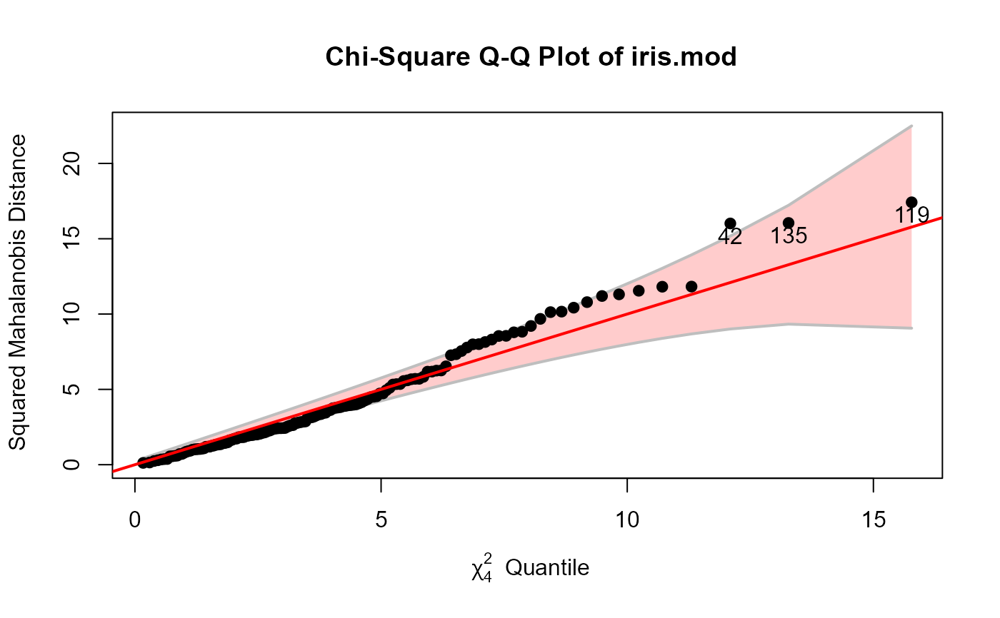
# show return value
out
#> DSQ quantile p
#> 119 17.41948 15.77709 0.001601826
#> 135 16.04843 13.27670 0.002954866
#> 42 16.01501 12.09388 0.002999094
# compare with car::qqPlot
car::qqPlot(Mahalanobis(iris[, 1:4]), dist="chisq", df=4)
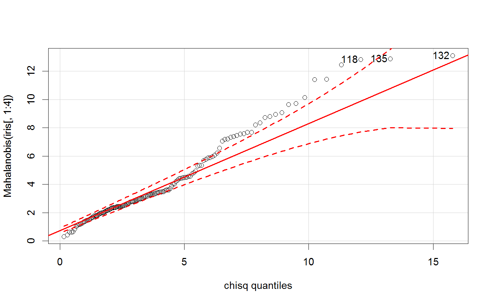
#> [1] 132 135
# Adopted data
Adopted.mod <- lm(cbind(Age2IQ, Age4IQ, Age8IQ, Age13IQ) ~ AMED + BMIQ,
data=Adopted)
cqplot(Adopted.mod, id.n=3)
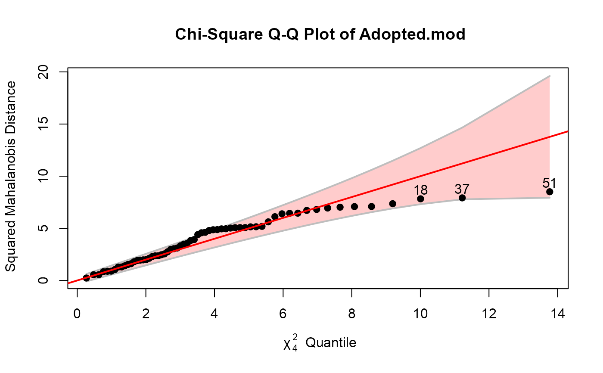
cqplot(Adopted.mod, id.n=3, method="mve")
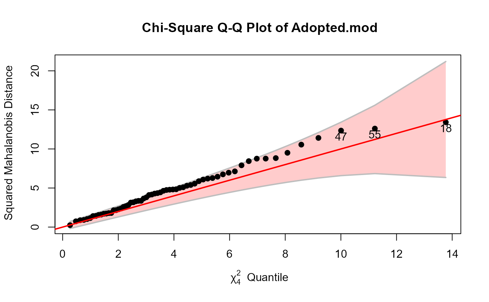
# Sake data
Sake.mod <- lm(cbind(taste, smell) ~ ., data=Sake)
cqplot(Sake.mod)
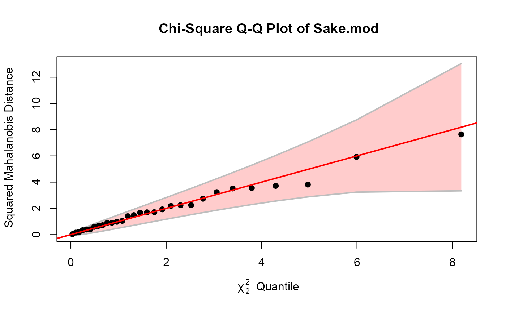
cqplot(Sake.mod, method="mve", id.n=2)
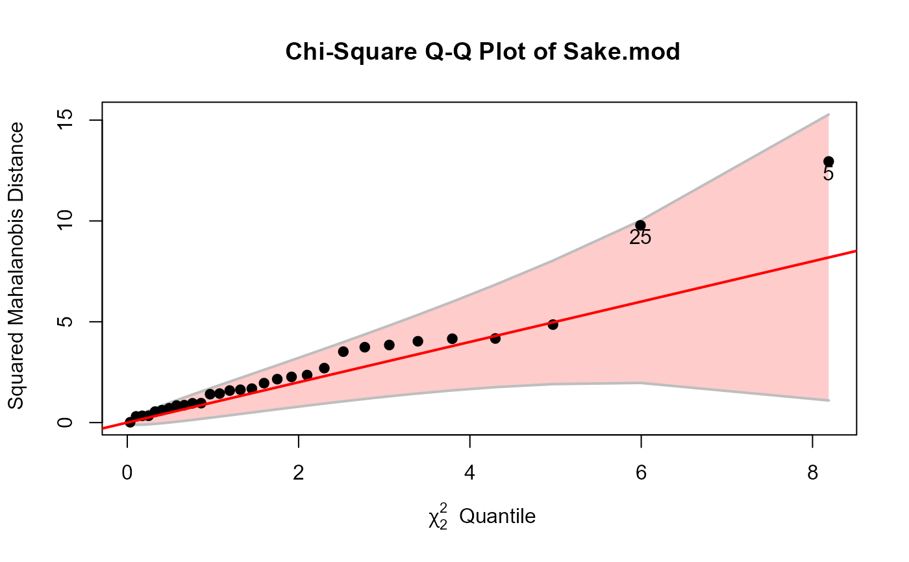
# SocialCog data -- one extreme outlier
data(SocialCog)
SC.mlm <- lm(cbind(MgeEmotions,ToM, ExtBias, PersBias) ~ Dx,
data=SocialCog)
cqplot(SC.mlm, id.n=1)
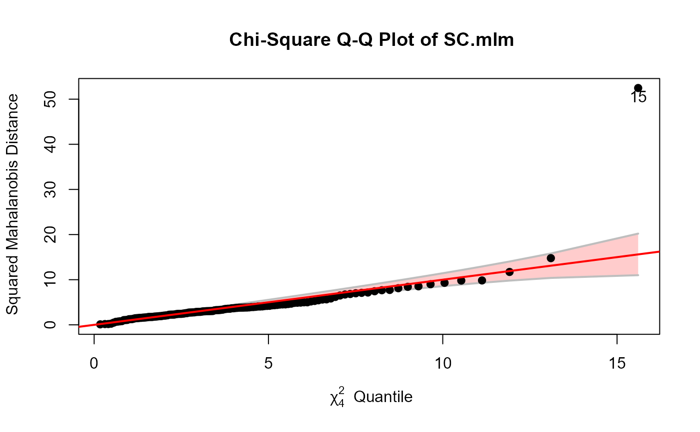
# data frame example: stackloss data
data(stackloss)
cqplot(stackloss[, 1:3], id.n=4) # very strange
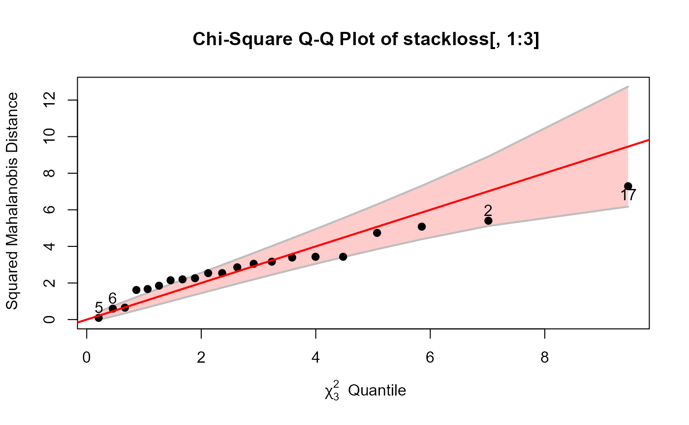
cqplot(stackloss[, 1:3], id.n=4, detrend=TRUE)
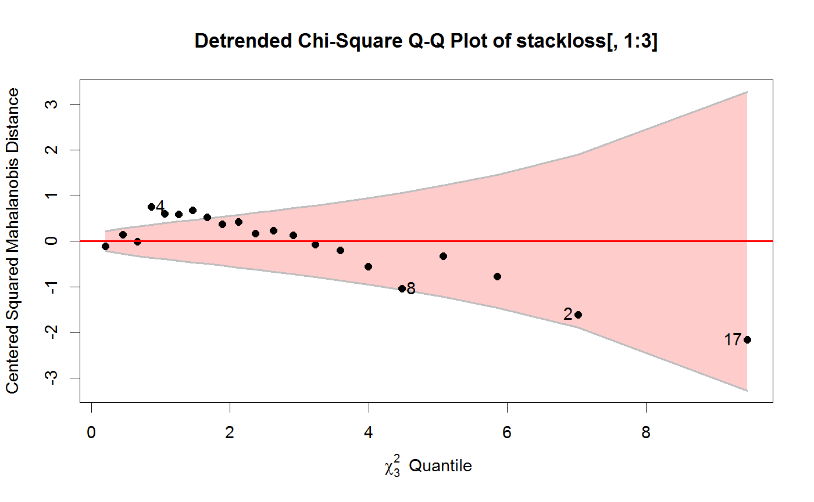
cqplot(stackloss[, 1:3], id.n=4, method="mve")
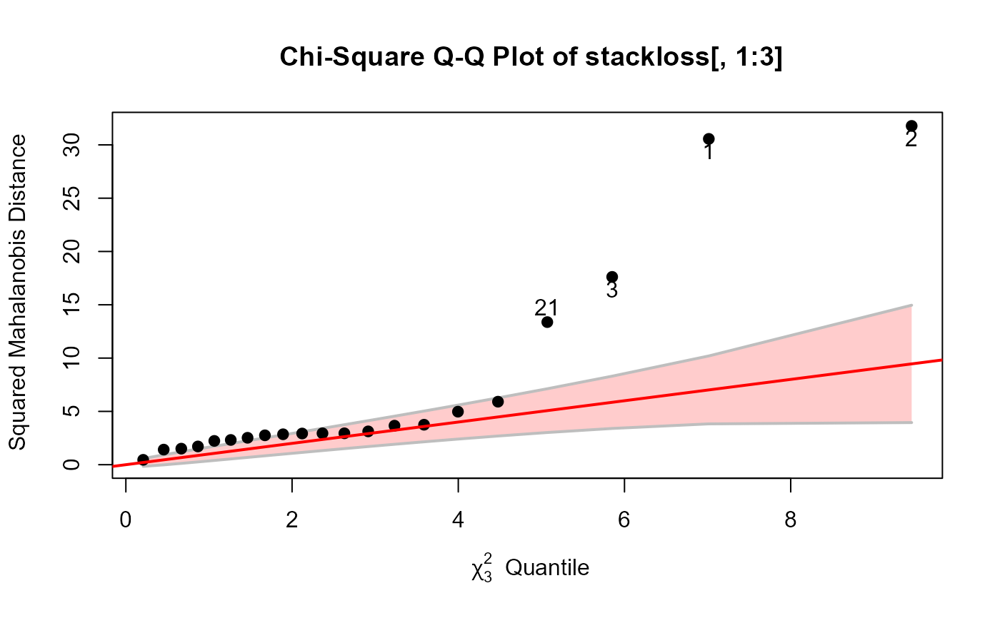
cqplot(stackloss[, 1:3], id.n=4, method="mcd")
# small n: compare the chi-square and exact beta references.
# With beta, boys 8, 12 and 20 fall outside the envelope
data(Ramus)
op <- par(mfrow = c(1, 2))
cqplot(Ramus, id.n = 4, main = "chi-square")
cqplot(Ramus, id.n = 4, dist = "beta", main = "beta")
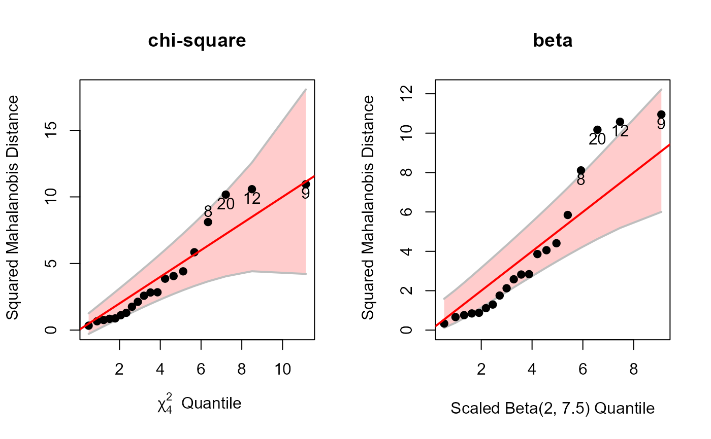
par(op)